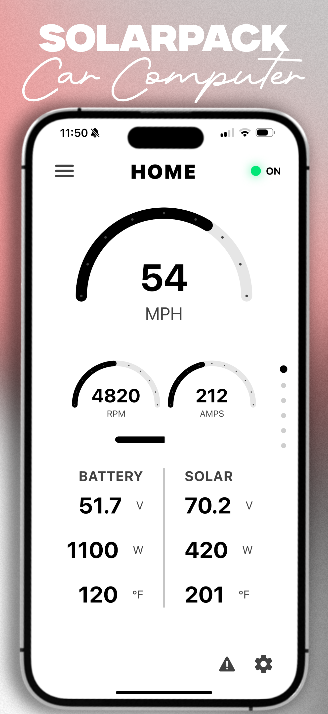
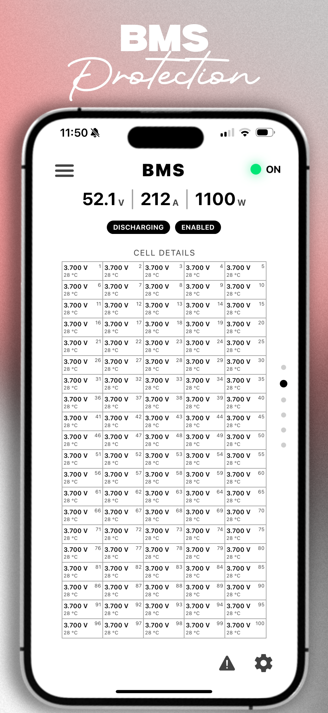
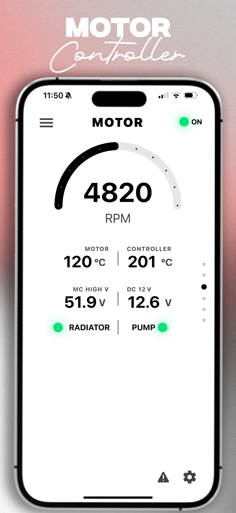
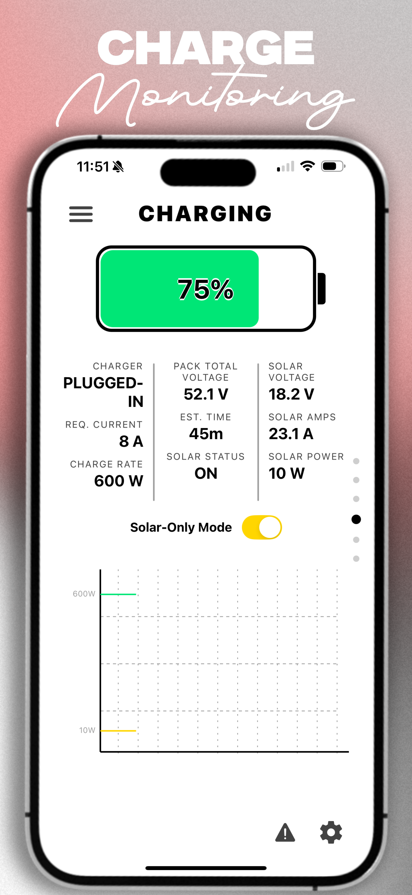
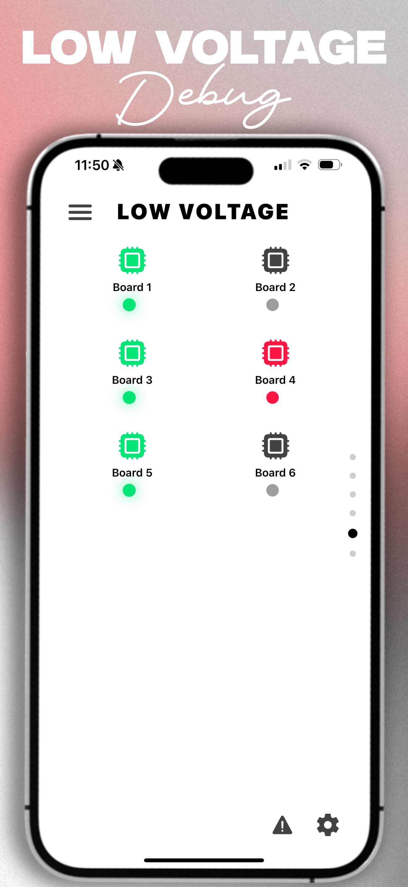

SolarPack App
Welcome to the SolarPack App page! Here you'll find information about our mobile and web applications, features, and how to get involved as a user or developer.








Welcome to the SolarPack App page! Here you'll find information about our mobile and web applications, features, and how to get involved as a user or developer.